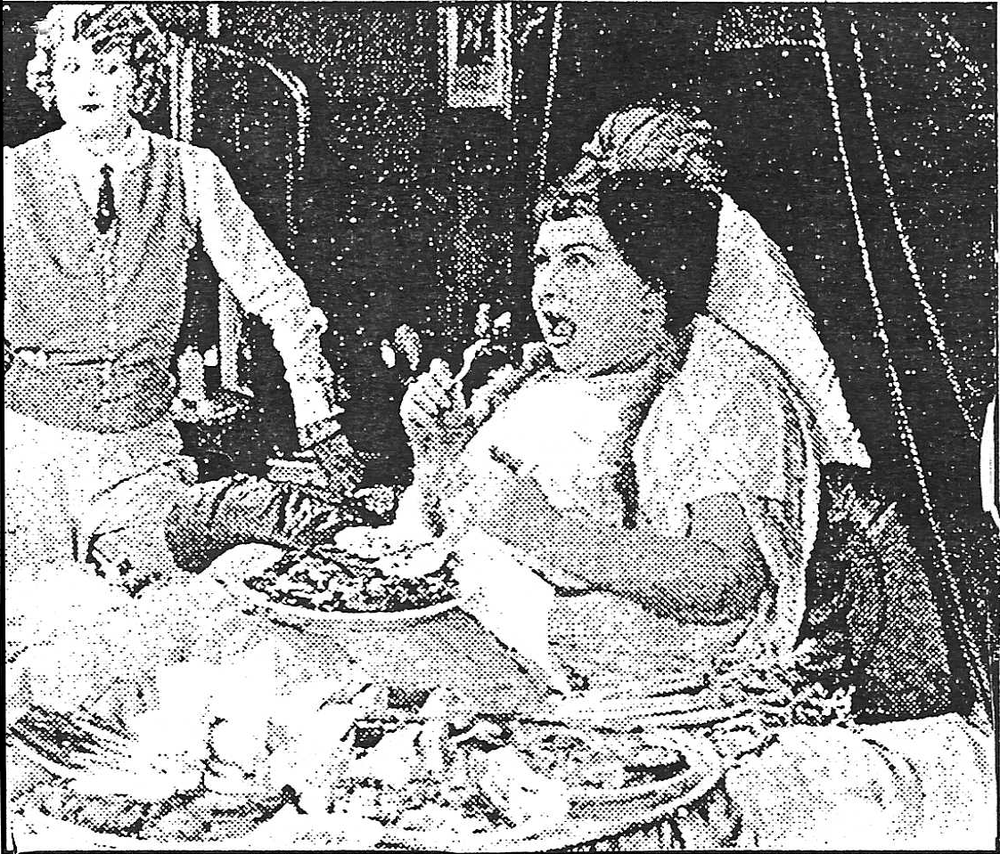

Dave is late for our interview. Dave, as it turns out, is late for everything. He's late for his own trial for lateness. He waits in the back until someone calls for him and then he approaches the bench, sad and hollow-eyed, his voice wracked with grave reproach.
JUDGE: Son, like a mountain, you have been judged tardy, a tardiness that spans eternity, for not just to this courtroom and its measly trial by jury were you tardy, but throughout life. Whenever a meeting was called, you were tardy there too. And when you were sprawled on the cement and flying like an angel overhead, you were tardy in returning to your gravely fallen form and wound up in the hospital, strapped to a bed. And later, and even later the tardiness grew stronger in thee, even as you became famed for tardiness, then abhorred for it.
DAVE: (long pause)
JUDGE: Well, this is typical.
"He was a bastard, his grease-paint face plastered my ceiling, sent me reeling, do you think I was heeding my soggy Irish mom's back-door pleadings as I slammed by, surly, high off steroids, guns, spermicide and turns, bruised her varicosed, gross thigh, almost threw up from the after-wilt of it, congratulated the stalwart stasis of my shattered stomach and bent not lower but up above it, crying as the gastritis sled me like a bag of chips, like a pill that sits within the hollow of your deepest need, the one kept beneath your stash of sleep and jewelry, under the skulls of count-less victims, lower than the basest urge on girl-less, lost weekends...rea-son outvoted, total slack a great beyond that you'd surrounded, beat and meet by the side of side's outside challenge? Do you think I was heeding her shushed whisper to not annoy the mimes? I was too disgusted by their fake smiles." said a breathless 8 year old Quentin Stunado of Southeast Orange, NJ. When asked to elaborate his position on the politics of mimery, he added:
"Bake like Sandy Sara Froster cake that ate the plate of yesterday's waste and cried beside the great divide, that sighed only when locked inside the mile-long mall, where you as a baby first crawled, and shopped with tooth and grin since money was absent, and cried like a stranded waif, shriek-ing mommy at the top of your lungs, and back down into the beneath, bringing hideous green bud where ashes meant to be, bringing ugly me, like an avenging phantom upon your family tree, bringing rotted harvest, and breaking free, from the past, slamming down an empty glass, and here's where the wise man leaves, and the leaves of autumn are wise until the man rakes them, the leaves of the wise man, the leaves of the
wise man, the leaves of the wise man the coke the size of the wise man, the wise of the size man, the bastardization, the cross of treason like plastered cast, Mamma cast the first stone, Mamma Cass rolled this killer bone, it stoned me, the mobs dethroned me, I felt vaguely lonely without TV but the newsboy freed me, gave me strings of words to read, gave me gasoline and Spanish money, promised gold and park place hotel monopoly would have had him slaughtered, fed him whiskey-stunted otters, urged him wretch that burrito dinner instead it killed him, instead the rain of overtly gastric acid knocked him past the point of rising to find that secreted stash of pepto bismot., oh man..." The mime could not be reached for comment.

Perhaps you represent a complacent element in a large, trendy group of people, and yet you find that the lack of direction and/or arbitrary desire for Individuality' in your clique is causing such aberrant behaviorisms as opportunism, mock allegiance, jeal-ous slander and sublimated disrespect. Hence, no nucleus, no membrane. Perhaps your goals are stultified by languid cohorts, bent on providing themselves with couchmates to grow fat on and to use as an emotional band-aid whenever necessary. It would seem an appropriate opportunity to launch a campaign for yourself. An embarkation into your own mini-culture. Before the cauldron overboils in a fitful imbroglio, carpe diem and plant your minions deeply!
You will need:
1. SOME FORM OF TALENT OR MARKETABILITY Preferably in an artistic format that at least gives you the appearance of a budding media magnet.
2. A TEAM OF VAPID TOADIES
Easy to find in university surroundings. Preferably young, ego grubs that nourish your self-esteem. You will need to harness their capacity to drink, and subsequently distort their perception of your qualities and/or sincerity.
3. STONE FACED APATHY:
Implications of Exclusivity Attract Higher Caliber Pissants
You will need to prune your garden of hubris in order for it to function efficiently.
Clipping peons builds character. It will require a heart of freon to callously dismiss them as they look at you with unblinking, innocent doe-eyes.
4. MONEY: The Frankenstein Monster That's Devours Man's Soul
You cannot expect worship eating at McDonald's. Anyone can be bought. A week c reckless philanthropy is a necessary investment in order to fabricate a power Once you have utilized ingredient #1 to build your empire, you can mercilessly pilfer your toadies' assets until your gullet is sated.
5. POWER RELATIONSHIP: Two Hands Clapping Make One Loud Noise
Another tool to ingratiate the yes-people in your midst is an enigmatic relationship with someone who can grift charisma even better than you. Keep your toadies con- / fused, so you can glom superiority off their ill-fated pursuits
8. THE INNER CIRCLE: Singleminded Opinlonators to Furnish Answers You Know Not Find select henchmen to provide an ego cabinet in case of attack from competing tyrants or perfidious toadies. You needn't overextend your capabilities. Frisk all encumbents for alterior motives.
With these ingredients you should find it more than easy to furnish your castle accordingly. With the right balance of self-importance and well proportioned noblesse oblige, a well-preserved and relentlessly driven upstart can Idi Amin his way all the way to Hollywood!
*Zeitgeist: The moral, cultural or intellectual climate of an era. 3
Soft-spoken SWM desperately deeking an F willing to forget the fact that I'm broke, smell like disinfectant and have never watched one episode of Seinfeld. I know many interesting spots to drank beer in front of, and will call you constantly to go to them. Your friends will be amazed at my tenacity.
3
The Procrastinator August, 1993